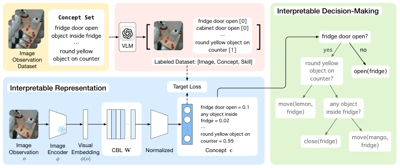
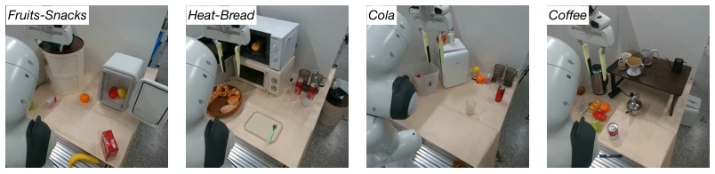
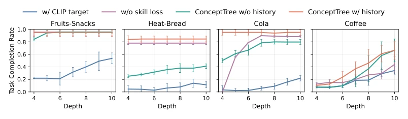
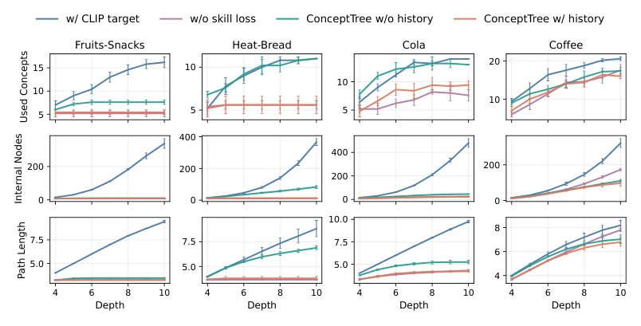
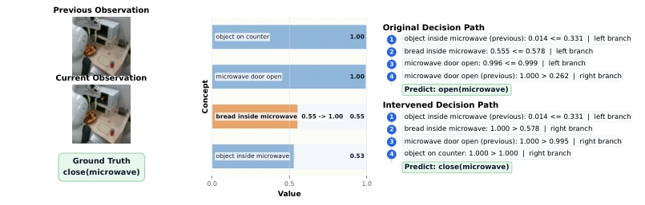
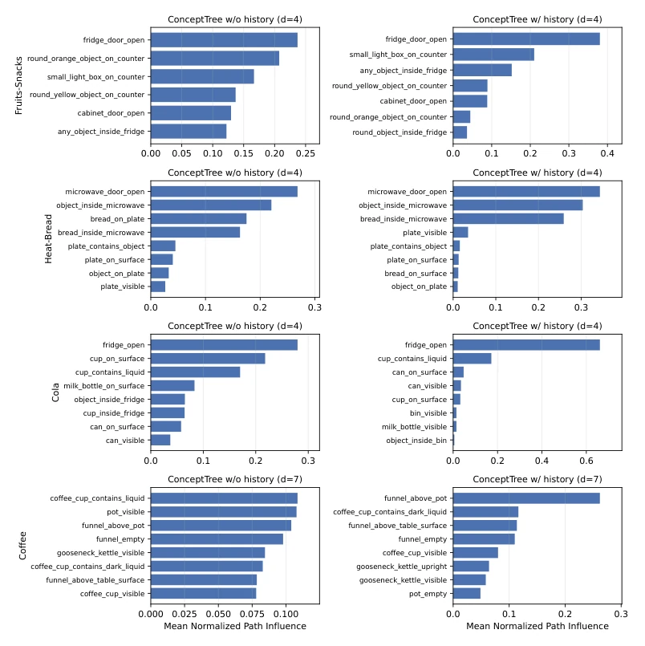
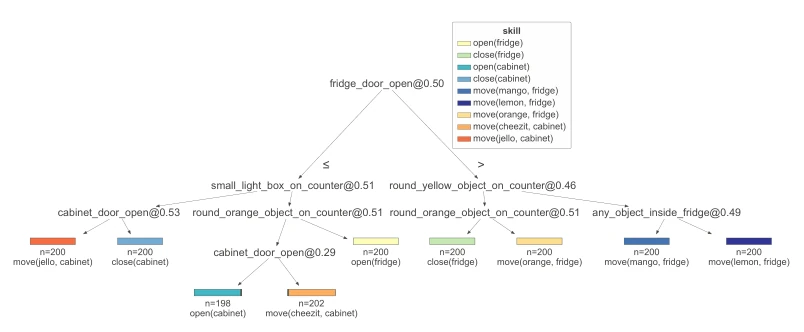
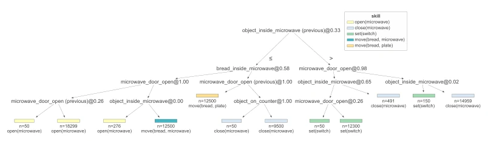
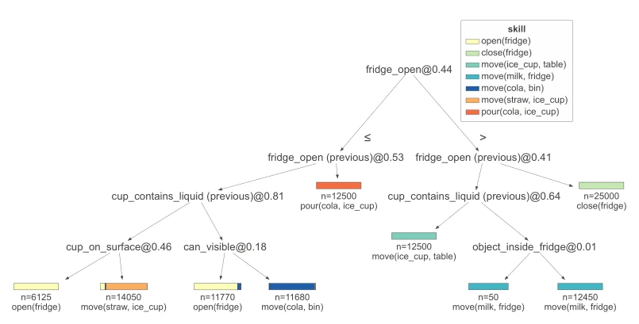
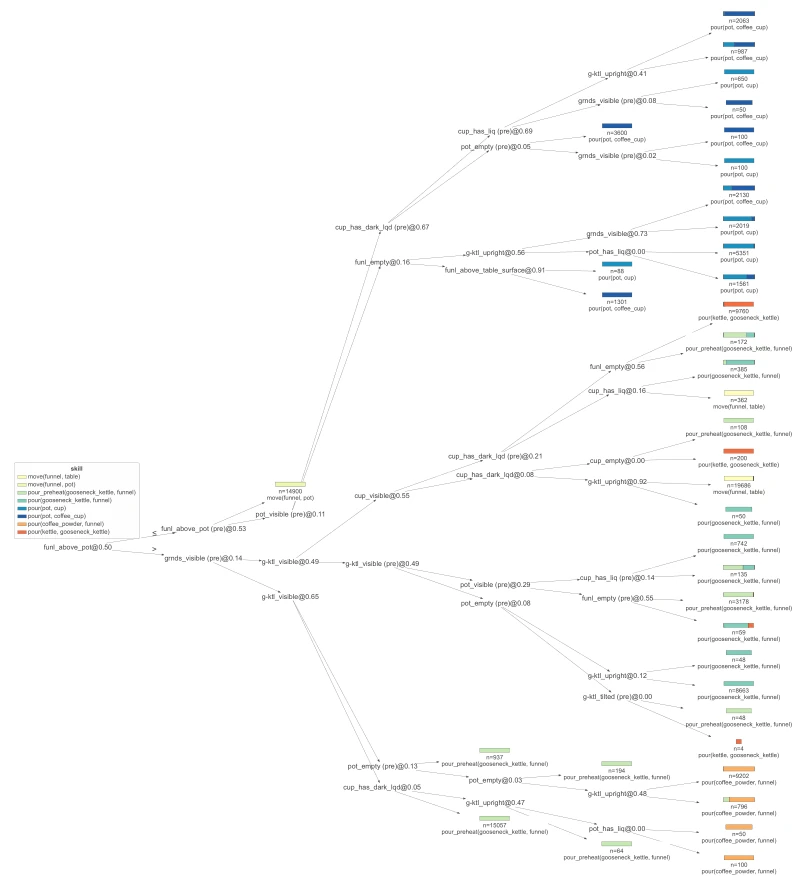

ConceptTree attempts to install "transparent glass" on black-box robot decision-making, using a concept layer to interpret vision and a decision tree for logic, which is indeed easier to debug than pure VLMs. However, relying on VLMs to annotate concepts, does this count as "explaining a black box with a black box"? Moreover, a fixed concept set limits open-ended tasks. The advantage is convenient intervention; changing a concept value can fix bugs without retraining, which is very attractive. The disadvantage is questionable generalization, after all concepts are preset, and may fail when encountering unseen scenarios. Additionally, VLM supervision may be unreliable on fine-grained visual states, limiting its robustness under complex spatial relationships. This compromise scheme suits specific tasks, but is still far from general intelligence.
Long-horizon operations require high-level skill selection, but existing end-to-end policies [41, 34] are black boxes, making failure diagnosis difficult. Explainable methods such as CBM [17] or symbolic policies [10] mostly rely on low-dimensional states or latent features, unable to directly associate visual scene attributes. The lack of a semantically transparent decision interface leads to humans finding it difficult to trust or intervene in the system. Existing methods often sacrifice interpretability or sacrifice performance in complex visual tasks. A framework that is both based on visual concepts and capable of explicit reasoning is needed to solve the problems of opaque decision logic and difficult debugging, especially in long-horizon dependency scenarios, ensuring decision paths are traceable.
The framework is divided into two layers: the concept layer and the decision layer. The visual encoder extracts features, projects them into a normalized concept space, uses VLMs to generate binary concept labels for supervised training, and adds skill loss to maintain decision relevance. The decision layer uses a decision tree to reason on concept vectors, supporting historical context. During training, VLMs are only used to generate labels; during inference, VLMs are not needed. The innovation lies in using VLMs for concept validation rather than similarity, and the decision tree directly operates on semantic concepts rather than latent variables. The concept layer calibrates outputs to normalized values via sigmoid, decision tree nodes split based on concept thresholds, forming traceable paths. This design decouples perception and decision-making, allowing each skill selection to correspond to specific scene concept conditions, achieving a transparent mapping from pixels to semantics to actions.

Figure 1: Overview of the ConceptTree framework. The model consists of three main components: (i) a visual encoder that extracts features from observations, (ii) a concept projection layer that maps features to a structured concept representation, and (iii) a decision tree that predicts high-level skills based on the concept vector. During training, a VLM provides binary concept judgments for supervision, while at inference time, the system operates without access to the VLM, relying solely on the learned concept representation and decision tree.
实验Experiments
在四个真实操作任务（如热面包、咖啡）上评估，指标为完成率。相比 VLM 策略和 CBM 基线，ConceptTree 在复杂任务中表现更好。消融显示概念监督质量比树深度更关键。干预案例表明修改单个概念值即可纠正错误，无需重训。证明了语义透明性和可控性。在 Cola 和 Coffee 任务上优势明显，说明结构化推理对复杂场景有效。实验还发现，更好的概念监督能带来更紧凑的决策树，提升了效率。整体表明该方法在长程任务中兼具性能与可解释性，但依赖预设概念集。
Evaluated on four real-world manipulation tasks (e.g., hot bread, coffee), with the metric being completion rate. Compared to VLM policies and CBM baselines, ConceptTree performs better in complex tasks. Ablation shows concept supervision quality is more critical than tree depth. Intervention cases show modifying a single concept value can correct errors without retraining. Proving semantic transparency and controllability. Advantages are obvious on Cola and Coffee tasks, indicating structured reasoning is effective for complex scenes. Experiments also found that better concept supervision can lead to more compact decision trees, improving efficiency. Overall indicates the method combines performance and interpretability in long-horizon tasks, but relies on a preset concept set.

Figure 2: Tasks evaluated in our study, including storing fruits and snacks, heating and preparing the bread, preparing a cup of ice cola and storing the milk, manual coffee brewing, with example observations.

Figure 3: Ablation study across four tasks. Bars indicate standard deviation. Depth denotes the maximum allowed tree depth during training, not the actual depth.

Figure 4: Tree complexity under different ablation settings. We report the number of used concepts and leaf nodes and bars indicate standard deviation.

Figure 5: Decision-path diagnosis and concept intervention. In this Heat-Bread example, the original path predicts open(microwave) because the value of bread inside microwave falls below the split threshold. This is inconsistent with the observation, where the bread is already inside the microwave, so the concept is falsely treated as negative. Manually correcting this single concept value redirects the tree traversal and changes the prediction to the ground-truth skill close(microwave).
其他图片Other Figures

Figure 6: Visualization of concept importance in decision paths across tasks.

Figure 7: Visualization of decision tree for the Fruits-Snacks task.

Figure 8: Visualization of decision tree for the Heat-Bread task.

Figure 9: Visualization of decision tree for the Cola task.

Figure 10: Visualization of decision tree for the Coffee task.